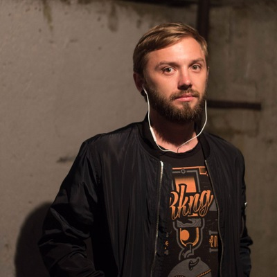

Change theme
Shchipanov Gleb
Senior Frontend developer (Vue/React)

Email:
gcreego@gmail.com
Linkedin:
linkedin.com/in/gshipanov
Phone:
+381629453655
Urban Institute - office of Ural State Architecture Academy
Bachelor of Engineering
Applied Informatics, social communication and media technologies
English: B2
Russian: C2
Spanish: A1
Shchipanov Gleb
Senior Frontend Developer (Vue/React)
My name is Gleb, I have been working as a Frontend developer for 9+ years.
My main development direction is interface development using React, Vue and TypeScript. I believe those are the best tools for modern SPA applications.
Over the course of my career, I have successfully developed numerous user interfaces that have significantly improved user experience and increased conversion rates. I successfully integrate APIs and third-party services, extending the functionality of projects. I also have experience with Sass/SCSS for creating styles and some UI libraries for creating modern and intuitive designs. Deep understanding of UX/UI design principles for optimal interaction with web applications.
I am eager to constantly evolve and learn new technologies, ready to apply my experience and knowledge to create unique and innovative web applications.
I will be glad to discuss the possibility of cooperation and details of work.
Development skills:
Vue/Vuex/Pinia
React/Redux/RTK
Javascript(ES6)
Vite/Webpack/Gulp/Grunt
Html/Html5
Css/Css3/Scss/Less
ESLint/Stylelint
Git
Docker
CI/CD
Work experience:
Senior Frontend developer
Working as senior frontend developer at Politico: politicopro.com and agencyiq.com
Did an audit from which we made interface improvements and big production bugs fixes
Improved development speed by moving to vue3/pinia/vite
Refactored Eslint config and added Stylelint for better code quality and development improvement
Initiated BE changes to remove excessive pages requests to speed up pages load time
Implemented Page Api, technology when editors can add or remove page components by themselves which took off some work from devs
Created a process when design first checked by FE devs for better UX
Greatly improved sites accessibility to correspond GWA and ADA and better UX
Technologies: JavaScript(ES6), Vue (2/3), Vuex, Pinia, Webpack, Vite, SCSS, Eslint, Stylelint, Jest, Cypress, Accessibility
Frontend Teamlead
Worked directly with clients and managers which led to better setting goals process
Created company processes which helped to improve management time and better tasks understanding for devs and designers
Created boilerplates for future projects and updated current projects to correspond them which helped to improve code quality and development speed
Grew 3 Junior developers into Middles
Technologies: JavaScript(ES6), Vue, Vuex, React, RTK, Webpack, SCSS, EsLint, Stylelint, Jest, Cypress
Middle Frontend developer
Made a metallurgy sales automatization app that led to sales improvement and sales managers work efficiency
Technologies: JavaScript(ES6), React, RTK, Babel, Webpack, Scss, Docker
Middle Frontend developer
Made marketing sites which contributed to getting second round of startup funding
Created online management SPA for company 360 degree camera which greatly improved user experience
Learned new instruments, such as React, Redux, Docker
Technologies: JavaScript(ES6) React, Redux, Babel, Webpack, Scss, Docker
Middle Frontend developer
Took part in development of automated task creation platform with analytics, gamification and binding with CRM for managers work improvement
Technologies: ROR, JavaScript, Backbone, Babel, Webpack, Scss, Material design
Frontend developer
Created sites for Microsoft, SAP and local building and banking companies
Learned to use bundlers (Gulp, Grunt), Css-preprocessors (Less, Scss), Html-preprocessors (Jade, Haml), Jquery and Lodash
Technologies: Html/Html5, Css/Css3/Less/Scss, JavaScript/Jquery/Lodash, Gulp/Grunt
Html-coder + started using JavaScript
Created a lot of commercial sites on company CMS
Technologies: Html, Css, Php, JavaScript
Html-coder
Created sites on Smarty CMS and learned how to use developer instruments properly
Technologies: Html, Css, Php
All the time between works and from 2017 until 2020